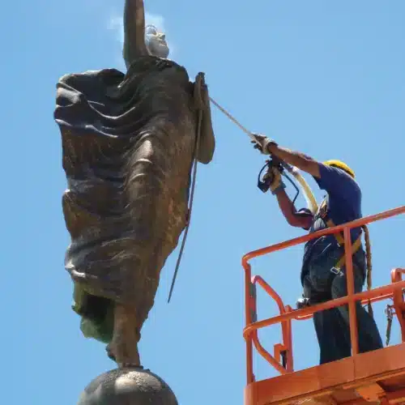
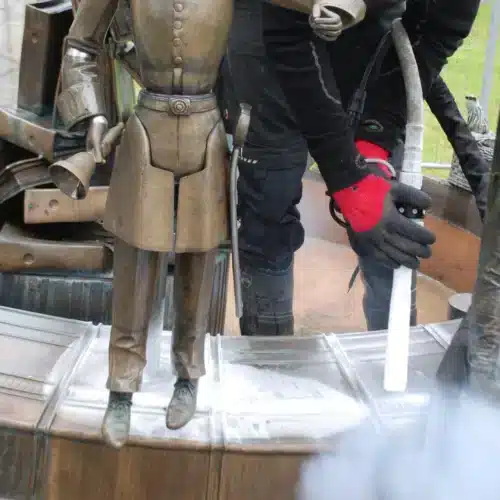

01
MONUMENTS & SCULPTURES
기념물 · 조형물


조각의 세부를 유지하면서
수십 년 쌓인 오염을 제거합니다.
야외 기념물에는 교통 매연과 산성비 흔적, 조류 배설물, 이끼와 조류 같은 생물성 오염이 대리석과 화강암, 청동 표면에 쌓입니다. 조각의 얇은 부분과 새김 글자는 연마 방식으로 세척하면 마모될 수 있는 부위입니다.
드라이아이스 세척은 분사 압력과 입자 크기를 낮춰 얇은 조각 부위를 지나고, 두꺼운 오염층에는 조건을 높이는 식으로 한 대상 안에서도 조건을 바꾸어 작업합니다. Cold Jet 자료에는 남북전쟁 기념물을 세정 매체 격리 설비 없이 세척해 기간과 비용을 크게 줄인 사례가 소개되어 있습니다.
대표 대상
- 공공 조각 · 동상
- 화강암 · 대리석 기념물
- 청동 명판 · 석조 기단
- 기념 포 · 야외 설치물
주요 오염물
매연 · 산성비 흔적 · 생물성 오염 · 이끼 · 조류 배설물